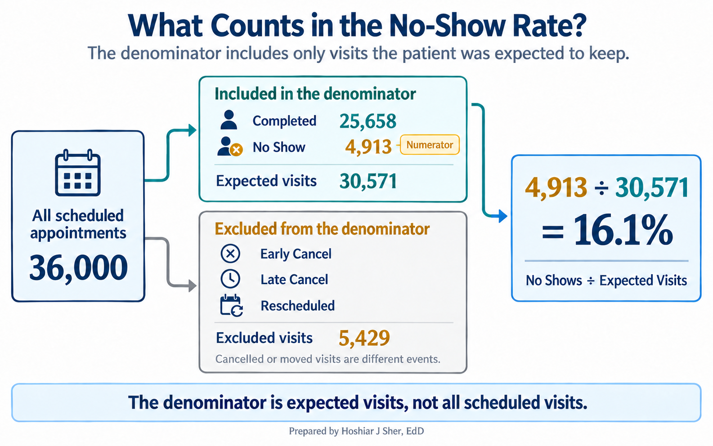
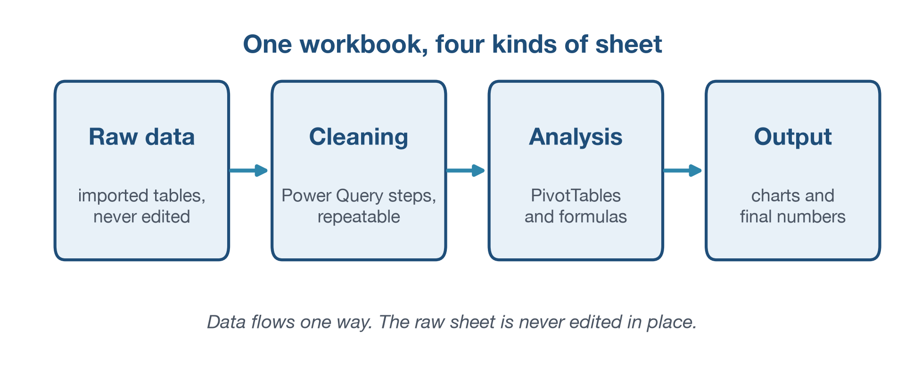
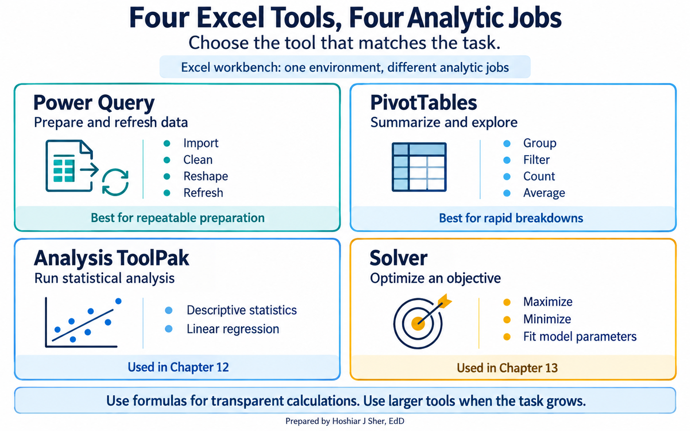
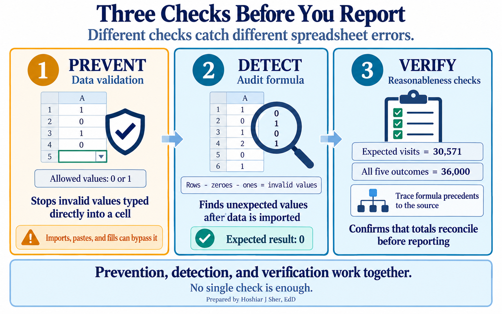
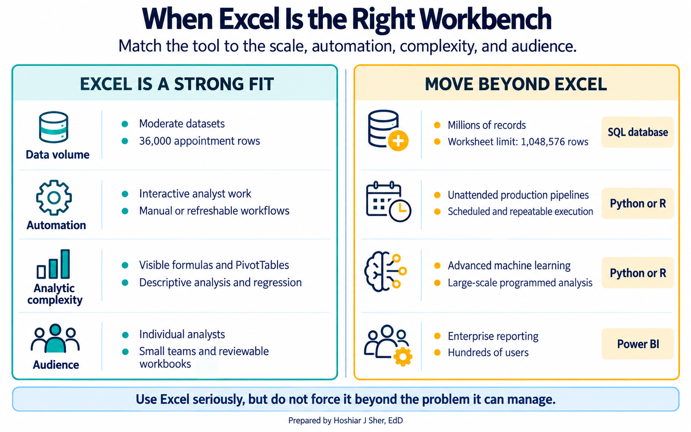
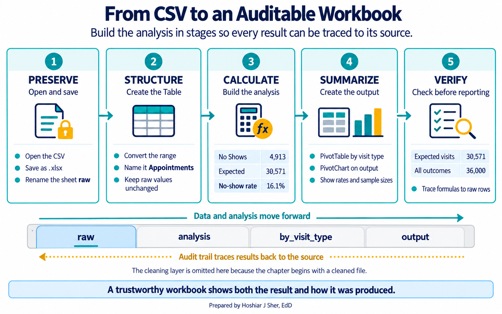
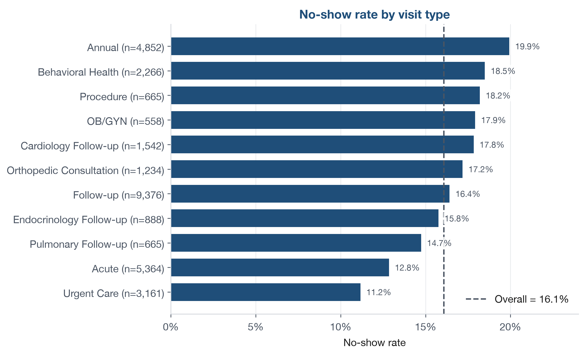

Excel as the Analyst’s Workbench
Opening scenario
A new analyst at a community health system is handed a single file,
DS2_appointments_clean.csv, and one question from the
operations director: “What is our no-show rate, and can you show me how
you got it?” The second half of that request is the hard part. The
number itself is one calculation. Producing it in a way that a colleague
can open, follow, and trust next quarter is a matter of how the workbook
is built.
Excel is where most analysts start, even in organizations that own more advanced tools. That is not a weakness if the workbook is built with discipline.
A spreadsheet thrown together in an afternoon can hide errors, bury its own logic, and produce a number no one can reproduce. A well-structured workbook imports the file, cleans it, summarizes it, and presents a result anyone can audit. The difference is not the software. It is design discipline.
This chapter builds that workbook one layer at a time. You will give the raw file a structure, make its columns addressable, and calculate the no-show rate with a small core of functions. Then you will check the result and see where Excel stops being the right tool. By the end, you will have reproduced the same 16.1 percent no-show rate from Chapter 1, this time in a workbook that shows its work.
By the end of this chapter, you will be able to:
- Organize a workbook into raw, cleaning, analysis, and output layers so any result can be traced back to its source.
- Convert imported data into an Excel Table and use structured references and named ranges to keep formulas readable and correct as data grows.
- Match a small core of functions and four analytic tools, Power Query, PivotTables, the Analysis ToolPak, and Solver, to the task each one fits, and preview where the book develops each.
- Apply data validation and formula-auditing habits that catch spreadsheet errors before they spread.
- Judge when Excel is the right tool and when a problem calls for SQL, Python, or a reporting platform.
Key concepts
A spreadsheet is most valuable when it is treated as a disciplined analytic environment, not an informal scratchpad. The examples in this book assume Microsoft 365, Excel 2021, or Excel 2024, on Windows or Mac, because a few functions used later, including XLOOKUP and dynamic arrays, are not present in older versions. Where a function has an older equivalent, the text says so, and where a menu path differs on a Mac, the text notes it.
A spreadsheet is only as trustworthy as it is auditable. If a colleague cannot follow how a number was produced, the number cannot be trusted, however correct it happens to be.
Throughout this book, the no-show rate is the number of No Shows divided by the number of visits the patient was expected to keep, that is, Completed plus No Shows. Early Cancel, Late Cancel, and Rescheduled visits are excluded from both the numerator and the denominator, because a cancelled or moved visit is a different event with a different cause. This is the definition used here; some organizations count late cancellations as no-shows, so always state the rule you used.
Figure 1 shows what the denominator counts and what it leaves out.

Give the workbook a structure
Start where the analyst starts: with one file and no structure.
DS2_appointments_clean.csv holds 36,000 rows, one per
scheduled visit, and opening it in Excel gives you a single grid of raw
data. The temptation is to begin calculating on that grid directly.
Resist it. The moment you edit a raw value or drop a formula beside the
data, you lose the ability to say where a number came from.
A disciplined workbook separates its work into four layers, each on its own sheet:
- Raw: the imported data exactly as it arrived, never edited by hand.
- Cleaning: the transformations that fix and reshape the data.
- Analysis: the PivotTables and formulas that answer questions.
- Output: the charts and final numbers a reader sees.
Figure 2 shows the flow, and it runs one way only: data moves from raw to output, never back. Because the raw sheet is never touched, any result downstream can be traced to the rows it came from. This calculation traceability, showing how a number was produced, is what makes a workbook auditable, even though a spreadsheet does not by itself record who changed what and when. Organizing a spreadsheet so both people and software can read it is a discipline in its own right (Broman & Woo, 2018).

The file you start with, DS2_appointments_clean.csv, has
already been cleaned, so this chapter builds the raw, analysis, and
output layers around data that is ready to use. Chapter 7 builds the
reusable import that feeds a workbook, and Chapter 8 builds the cleaning
layer, so you will meet the full four-layer architecture in stages
rather than all at once.
Two small habits protect this structure. The first is a one-sentence
note on each sheet stating its purpose, placed in a cell to the side of
the data or on a small documentation sheet, so the next reader does not
have to guess. The second is a file name that means something. A
workbook called final.xlsx tells you nothing, and a later
final_v2_REAL_final.xlsx tells you less. A name like
Clinic_NoShow_Analysis_2026-04-01.xlsx states what the
workbook is and when it was made. Structure keeps a result traceable,
but only if the data inside each layer can be referred to cleanly. That
is the next problem to solve.
Make the columns addressable: Tables and structured references
You now have the raw appointment data on its own sheet. Left as a
plain range, it is fragile. Formulas point at coordinates like
AJ2:AJ36001, and the day someone inserts a row or the file
grows to next quarter’s data, those coordinates quietly stop covering
everything. The fix is to convert the range into an Excel Table.
An Excel Table is a structured, named object that Excel manages as a unit. It expands automatically when you add rows to it, keeps its header row visible while you scroll, and lets you refer to a column by its name instead of its coordinates. Note that a Table grows when rows are appended to it inside Excel; it does not re-read the original CSV on disk if that file changes later.
Once the appointment data is a Table named Appointments,
a structured reference lets you write
Appointments[attendance_outcome] in place of
AJ2:AJ36001. A formula that reads
COUNTIF(Appointments[attendance_outcome], "No Show") says
what it does; the same formula written against a cell range does not.
That readability is not cosmetic. When the reference is a column name,
the formula keeps working as the Table grows, because the name always
means the whole column. A fixed range covers only the rows you selected
the day you wrote it.
One detail matters for beginners. Inside the Table you can use the
short forms [attendance_outcome] for the whole column or
[@attendance_outcome] for the current row. But in a formula
written anywhere else, you must include the Table name, as in
Appointments[attendance_outcome].
A named range solves the same problem for a single
value. If your no-show analysis flags any clinic above a chosen
threshold, store that threshold in one named cell called
Threshold rather than typing 0.16 into a dozen
formulas. Change the threshold once, and every formula that refers to
Threshold updates.
Clean design also means avoiding merged cells, labeling consistently, and keeping the transformation logic visible rather than hidden three sheets away. A workbook should not read like a puzzle. With the columns now addressable by name, a small set of functions can answer most of the questions an analyst is asked.
A small core of functions, and four tools
New analysts often believe they need to memorize hundreds of
functions. They do not. A first year of healthcare analytics runs on a
small core: SUM, AVERAGE, COUNT,
COUNTIF and COUNTIFS, SUMIF and
SUMIFS, IF, XLOOKUP,
ROUND, TEXT, and a handful of date functions.
The goal is not to collect functions. The goal is to know which function
answers a real question. Table 1 maps the core to the appointment data
in front of you.
| Function | What it answers | Appointment example |
|---|---|---|
COUNTIFS |
How many rows meet conditions | Count no-shows in [attendance_outcome] |
SUMIFS |
A total under conditions | Sum [copay_usd] for completed visits |
AVERAGE |
A typical value | Mean [lead_days] across appointments |
XLOOKUP |
A value pulled from another table | Find a clinic name from its [facility_id] |
IF |
A value that depends on a test | Label an appointment high or low lead time |
The no-show rate the director asked for needs only one of these.
Counting no-shows and dividing by the expected visits is a job for
COUNTIFS, and structured references make the formula
readable.
To count no-shows and expected visits directly from the Table, with the outcome column referenced by name:
No shows: =COUNTIFS(Appointments[attendance_outcome], "No Show")
Expected: =COUNTIFS(Appointments[attendance_outcome], "Completed") + COUNTIFS(Appointments[attendance_outcome], "No Show")
Rate: =B1/B2 (No shows in B1, Expected in B2)
On the full file this returns 4,913 no-shows out of 30,571 expected
visits, a rate of 16.1 percent. Written against fixed cell ranges such
as AJ2:AJ36001, the same formula breaks the moment a row is
added; written against the Table column, it does not. XLOOKUP, listed in
the function table above, needs Microsoft 365 or Excel 2021; in older
versions the same lookup is done with INDEX and MATCH, or with
VLOOKUP.
Formulas cover a great deal, but four larger tools do the heavier lifting. It helps to see them as one connected stack rather than unrelated features, shown in Figure 3:
- Power Query prepares the data. It records import and cleaning steps you can refresh when new data arrives, so the cleaning is repeatable instead of manual. On a Mac, its full experience requires a Microsoft 365 subscription, and Chapter 7 builds the reusable import that relies on it.
- PivotTables summarize the data. Put
visit_typein rows, filterattendance_outcometo Completed and No Show, averageno_show_flag, and you have the no-show rate for every visit type in seconds. - The Analysis ToolPak runs the statistics. It is an add-in that ships with Excel and provides the linear regression Chapters 11 and 12 use.
- Solver optimizes. Chapter 13 uses it to fit a logistic regression by maximizing likelihood.
You do not need the last two yet; know that they exist and that the workbench you are learning now is the same one those chapters build on. Power without a check on it, though, is exactly how spreadsheets go wrong.

Check the work: validation and auditing
You can now produce the no-show rate. The next question is whether to believe it. Spreadsheet errors are common precisely because spreadsheets are easy to change and easy to misread, and a wrong number that looks tidy is more dangerous than one that looks wrong. Reviews of operational spreadsheets have repeatedly found that a large share contain at least one error, which is a strong argument for building checks in rather than trusting a result on sight (Panko, 1998; Powell et al., 2008).
Three habits catch most of these errors, and Figure 4 shows how each catches a different kind.
Prevent bad values with data validation, a rule that restricts what a cell will accept. If a field should hold only zero or one, a validation rule rejects a stray two typed into the cell before it corrupts a count. Validation mainly governs what someone types directly, though. Values that arrive by import, paste, or fill can slip past it, and Circle Invalid Data only marks cells once a validation rule is in place.
Detect what validation missed with an audit formula.
For imported data, count the values that are neither 0 nor 1, blanks
included, with
=ROWS(Appointments[no_show_flag]) - COUNTIF(Appointments[no_show_flag], 0) - COUNTIF(Appointments[no_show_flag], 1).
It should return zero.
Verify the result with reasonableness checks. When you filter the Table to completed and no-show visits, the rows that remain should equal the denominator your formula used, 30,571 here. That check reuses the formula’s own logic, so pair it with an independent one: confirm the five outcome categories sum to 36,000. If either number drifts in a way you cannot explain, stop and find out why. Tracing a formula’s precedents with Formulas > Trace Precedents turns a suspicious result into a visible chain back to the data.

Two traps are especially common. The first is the stale range: a
formula pinned to D2:D5000 silently stops covering new rows
the moment the data grows past row 5000, which is exactly the failure an
Excel Table prevents. The second is the version gap:
XLOOKUP and dynamic arrays exist only in Microsoft 365 and
Excel 2021 and later. A workbook that relies on them will not behave the
same way in Excel 2019, so state the version your work assumes.
A clean, checked workbook is trustworthy, but being trustworthy is not the same as being unlimited. It is worth knowing where the workbench ends.
Where Excel stops
Excel is an excellent environment for visible, entry-level analysis, and it is especially strong for learning because you can see the rows, the formulas, the Table, and the chart in one place. With Power Query and PivotTables it does far more than manual spreadsheet work: it imports files, reshapes them, refreshes queries, summarizes results, and drives a dashboard. The 36,000-row appointment file sits well within its comfortable range. Figure 5 contrasts where Excel is a strong fit with the kinds of work that call for a larger tool.

Excel is not the right tool for every problem, and pretending otherwise does a beginner no favors. A single worksheet holds at most 1,048,576 rows, so a file with several million records will not even open in full; the data model behind Power Pivot can hold more, but the worksheet grid cannot. Very large data, automated pipelines that must run without a person present, machine learning beyond the regression this book covers, and enterprise reporting to hundreds of users usually belong on other platforms: a SQL database, a language such as Python or R, or a reporting tool such as Power BI.
The point of this book is not that Excel solves everything. It is to use Excel as a serious environment for analytic thinking, so the habits you build here, traceable structure, readable references, and checked results, carry directly to those larger tools when the work outgrows the spreadsheet. To see them in one place, build the workbook end to end.
Walkthrough: build an auditable no-show workbook
This walkthrough turns the raw appointment file into a small workbook
that produces the 16.1 percent no-show rate and shows its work. It
assumes no prior Excel experience and uses the full file,
DS2_appointments_clean.csv. The data is synthetic, so it
holds no real patient information; a workbook built on real records
should never be shared or emailed without the protected health
information safeguards your organization requires. Work top to bottom;
each step names the exact tab, button, or formula. Figure 6 maps the
five stages you are about to build.

- Start Excel and choose File > Open. Browse to
datasets/DS2_appointments_clean.csvand click Open. The 36,000 appointment records fill the grid, with the column headings in row 1. Rename this sheetrawby double-clicking its tab. - Save the workbook in Excel’s own format before you add anything.
Choose File > Save As, pick Excel Workbook
(.xlsx), and name it
Clinic_NoShow_Analysis. This matters: a CSV file stores only one sheet of plain text, so the multi-sheet workbook you are about to build would be lost if you left it as a CSV. Add a sheet namedreadmeand, as you build, write one line there for each sheet you create, so every sheet’s purpose is documented in one place. - Click any cell inside the data. On the Insert tab,
click Table. In the dialog, confirm My table
has headers is ticked and click OK. The range
becomes an Excel Table. On the Table Design tab
(labeled Table on a Mac), set the Table
Name box to
Appointments. The columns are now addressable by name. - Add a new sheet with the + button next to the tabs
and name it
analysis. In cell D1, type the noteNo-show calculationso the sheet’s purpose sits to the side of the numbers. - On the
analysissheet, in A1 typeNo shows, and in B1 enter the No shows formula from the Excel Formula box in the Key concepts section, referencingAppointments[attendance_outcome]. Press Enter. Excel returns 4,913. - In A2 type
Expected, and in B2 enter the Expected formula from the same box, which adds the completed and no-show counts. Press Enter. Excel returns 30,571, the completed plus no-show visits, with the cancellations and rescheduled visits excluded by design. - In A3 type
No-show rate, and in B3 type=B1/B2. Format the cell as a percentage using the % button on the Home tab. The result is 16.1%, the overall no-show rate you met in Chapter 1. - Build the breakdown. Click inside the Table, choose Insert
> PivotTable, accept the new-worksheet default, and click
OK; rename the new tab
by_visit_type. In the PivotTable Fields pane, dragvisit_typeto Rows, dragattendance_outcometo Filters, then use its arrow, tick Select Multiple Items, and select only Completed and No Show; dragno_show_flagto Values. Click that value field, choose Value Field Settings, set it to Average, and format it as a percentage. Dragappointment_idto Values as well and set it to Count so each row shows its expected sample size. The rates now match the values in Figure 7, which sorts them and adds the overall line. - Add the output. If you added the Count field, drag it back out of
Values first, because a bar chart would plot the
thousands-level counts on the same axis as the percentages and flatten
the rate bars. With only the rate showing, choose Insert >
PivotChart and pick a Bar chart. Move it onto
its own sheet with Chart Design > Move Chart > New
sheet, and name that sheet
output. Your chart is a plain version of Figure 7, which is drawn separately with the visit types sorted and the overall reference line added. - Run two reasonableness checks. First, on the
rawsheet, click the filter arrow already on theattendance_outcomeheader (the Table added it), tick only Completed and No Show, and read the status bar: it should say 30,571 of 36,000 records found, the same denominator your formula used. Clear that filter. Second, on theanalysissheet, count each of the five outcomes (Completed, No Show, Early Cancel, Late Cancel, Rescheduled) with its ownCOUNTIFS, such as=COUNTIFS(Appointments[attendance_outcome], "Completed"), and confirm the five counts sum to 36,000, so no rows were lost or double counted. When both checks agree, the result is better supported and ready for review.

The workbook now has a raw sheet, an analysis sheet with the calculation, a PivotTable sheet, and an output sheet with the chart. It skips only the cleaning layer, because this file was cleaned already, which is the work of Chapter 8. Every number on it can be traced back to the raw rows, with a formula anyone can read and a check that confirms it. That is what “show me how you got it” looks like in practice.
Read the breakdown in Figure 7 with the same care Chapter 1 urged.
Each appointment carries exactly one visit_type in the
data, so the categories do not overlap: Urgent Care and Acute are
separate types, as are Follow-up and the specialty follow-ups. Some rest
on far fewer visits than others: OB/GYN (n=558) and Procedure (n=665)
sit within about two points of the overall rate, close enough that the
gap could be noise rather than a real difference. A rate is only as
steady as the number of visits behind it.
This exercise reproduces the overall rate on a small file you can
check by hand, this time with a formula instead of the status-bar method
you used in Chapter 1. You will use the 12-row teaching sample,
DS2_appointments_sample.csv, so every row fits on one
screen. The sample uses friendly column headings, so its outcome column
is named Outcome rather than the
attendance_outcome you saw in the full file; the values are
the same.
- Choose File > Open, browse to
datasets/DS2_appointments_sample.csv, and click Open. Twelve appointment records fill the grid, with headings in row 1 and theOutcomecolumn in column F. - Click any cell in the data, and on the Insert tab
click Table. Confirm My table has
headers is ticked and click OK. On the
Table Design tab (labeled Table on a
Mac), set the Table Name to
Sample. Then choose File > Save As and save the file as an Excel Workbook (.xlsx), so the sheet you add next is not lost. - Add a new sheet with the + button and name it
calc. Working on a separate sheet keeps your formulas from being pulled into the Table, which would happen if you typed in the row directly below it. - On the
calcsheet, in A1 type=COUNTIFS(Sample[Outcome], "No Show")and press Enter. This is the count of no-shows. - In A2, type
=COUNTIFS(Sample[Outcome], "Completed")and press Enter. This is the count of completed visits. - In A3, type
=A1/(A1+A2)and format it as a percentage with the % button. This is No Shows divided by Completed plus No Shows, the no-show rate, with the cancellations excluded. - Compare your rate with the 20 percent you found in the Chapter 1 Try It, and with the 16.1 percent overall for the full file. Write one sentence on why the small sample sits where it does.
The answer key is at the end of the chapter.
The four tools in this chapter are one connected stack, and the last two point forward. When Chapter 11 fits a linear regression, it uses the Analysis ToolPak through Data > Data Analysis. When Chapter 13 fits a logistic regression, it uses Solver to find the coefficients that maximize the likelihood, reached through Data > Solver. On Windows, switch both on through File > Options > Add-ins > Manage Excel Add-ins > Go; on a Mac, use Tools > Excel Add-ins. Turning them on now means the workbench is ready when the modeling chapters arrive.
The following is an illustrative scenario, not a specific
organization. A team inherited a workbook named
final_v2_REAL_final.xlsx with merged cells, hard-coded
totals, and formulas that pointed at cells three sheets away. It
produced the right answer, until someone added a row and it quietly did
not, and no one noticed for a reporting cycle. Rebuilding it as a
Table-based workbook with a raw sheet, a visible calculation, and a
row-count check took an afternoon, and it made every later question
faster to answer. The lesson was blunt: a workbook that cannot be
audited is a liability, not an asset.
- A workbook is a working environment, not a container. Separate raw, cleaning, analysis, and output so any result can be traced to its source.
- Convert imported data to an Excel Table so structured references stay readable and keep working as the data grows.
- A small core of functions plus four tools, Power Query, PivotTables, the Analysis ToolPak, and Solver, covers most beginner work.
- Validation rules, an audit formula for imported values, and reasonableness checks, such as matching a filtered row count to a formula’s denominator, catch errors before they spread.
- Excel is an excellent learning environment but the wrong tool for very large data, production pipelines, and machine learning beyond the regression this book covers.
- List the four kinds of sheet a disciplined workbook keeps separate, and explain in one sentence why the raw sheet is never edited by hand.
- Rewrite the formulas
=COUNTIFS(AJ2:AJ36001, "No Show")and=AVERAGE(K2:K36001)using qualified structured references to theAppointmentsTable, and explain why the structured version keeps working when the data grows. - Name the Excel capability best suited to each job: preparing and refreshing imported data; rapidly summarizing it; fitting a linear regression; solving an optimization.
- Give two checks you would add to an imported appointment Table to catch errors before reporting a number from it, and say why a data-validation rule alone does not catch a bad value that was imported rather than typed.
- Using
datasets/DS2_appointments_clean.csv, state the overall no-show rate and the denominator it is calculated on, and explain why the denominator is not 36,000. - Name two situations in which Excel is the wrong tool, and say what you would use instead.
- Build a PivotTable of the no-show rate by
facility_id, filteringattendance_outcometo Completed and No Show just as the walkthrough did, store a review threshold of 0.17 in a cell namedThreshold, and write a formula that returnsReviewwhen a clinic’s rate is aboveThresholdandOKotherwise. Identify one facility ID that your rule flags.
Try It. After building the COUNTIFS
formulas on the 12-row sample and dividing no-shows by expected visits,
the sample’s no-show rate is 20 percent (2 no-shows out
of 10 expected visits, with the 2 cancellations excluded). That sits
above the 16.1 percent overall rate for the full file because the sample
is tiny: with only 10 expected visits, one extra no-show moves the rate
by 10 points. It is the same small-sample caution from Chapter 1, now
produced with a formula instead of the status bar.
Exercises.
- Raw, cleaning, analysis, and output. The raw sheet is never edited by hand so that any downstream number can be traced back to the data exactly as it arrived.
=COUNTIFS(Appointments[attendance_outcome], "No Show")and=AVERAGE(Appointments[lead_days]). The structured version refers to each whole column by name, so it still covers every row after new appointments are added, while a fixed range such asAJ2:AJ36001covers only the rows selected when it was written.- Power Query; PivotTables; the Analysis ToolPak; Solver.
- For example, a validation rule that limits
no_show_flagto 0 or 1, and an audit formula=ROWS(Appointments[no_show_flag]) - COUNTIF(Appointments[no_show_flag], 0) - COUNTIF(Appointments[no_show_flag], 1)that should return zero. Data validation can prevent or warn about invalid values typed directly into a cell, but copied, filled, or imported values may bypass that warning; Circle Invalid Data can flag values that violate an existing rule, and the audit formula, which counts any value that is neither 0 nor 1, blanks included, gives a persistent check on imported data. - The overall no-show rate is 16.1 percent, calculated on 30,571 expected visits (25,658 completed plus 4,913 no-shows). It is not 36,000 because the Early Cancel, Late Cancel, and Rescheduled visits are excluded from the denominator, since a cancelled or moved visit is a different event with a different cause.
- Any two of: millions of rows, an automated production pipeline, machine learning beyond regression, or enterprise reporting to many users, handled instead with a SQL database, Python or R, or a reporting tool such as Power BI.
- A PivotTable by
facility_idlists clinics by their code, not their name; the readable name lives indatasets/DS1_facility_dim.csvand would need an XLOOKUP, which you do not need here. To name the threshold cell, select it, click the Name Box to the left of the formula bar, typeThreshold, and press Enter. With a clinic’s rate in, say, cellB2, the rule is=IF(B2>Threshold, "Review", "OK"); if clicking the rate cell writes aGETPIVOTDATAformula instead ofB2, type the plain referenceB2yourself. At a threshold of 0.17 the rule flags the five clinics above 17 percent: SP03 (18.5 percent), SP04 (17.9), SP01 (17.8), PC06 (17.6), and SP05 (17.2). Because each specialty clinic in this dataset hosts a single visit type, the specialty-clinic rates (SP03, SP04, SP01, SP05) equal the matching visit-type rates in Figure 7; PC06 is a primary care clinic with a mix of visit types.
- Broman, K. W., & Woo, K. H. (2018). Data organization in spreadsheets. The American Statistician, 72(1), 2-10. https://doi.org/10.1080/00031305.2017.1375989
- Microsoft. (n.d.). Overview of Excel tables. Microsoft Support. Retrieved September 27, 2026, from https://support.microsoft.com/en-us/office/overview-of-excel-tables-7ab0bb7d-3a9e-4b56-a3c9-6c94334e492c
- Microsoft. (n.d.). Power Query documentation. Microsoft Learn. Retrieved September 27, 2026, from https://learn.microsoft.com/power-query/
- Panko, R. R. (1998). What we know about spreadsheet errors. Journal of Organizational and End User Computing, 10(2), 15-21. https://doi.org/10.4018/joeuc.1998040102
- Powell, S. G., Baker, K. R., & Lawson, B. (2008). A critical review of the literature on spreadsheet errors. Decision Support Systems, 46(1), 128-138. https://doi.org/10.1016/j.dss.2008.06.001
- Excel Table
- A structured, named object Excel manages as a unit, expanding automatically when rows are added and supporting references by column name.
- Structured reference
-
A formula reference that uses a Table name and column name, such as
Appointments[attendance_outcome], instead of cell coordinates. - Named range
- A cell or range given a readable name so a constant or threshold can be defined once and reused.
- Power Query
- Excel’s data preparation layer, which records refreshable import and cleaning steps.
- PivotTable
- A tool for rapidly summarizing tabular data by dragging fields into rows, columns, filters, and values.
- Analysis ToolPak
- An add-in included with Excel that provides statistical procedures, including linear regression.
- Solver
- An Excel add-in for optimization, used later to fit a logistic regression by maximizing likelihood.
- Data validation
- A rule that restricts what a cell will accept when a value is typed in.
- Reasonableness check
- A quick, independent test that a result makes sense, such as confirming a filtered row count matches a formula’s denominator.
- XLOOKUP
- A lookup function in Microsoft 365 and Excel 2021 or later that returns a value from one column matched on another; INDEX with MATCH is the older equivalent.
- Dynamic array
- A formula result that automatically spills across neighboring cells, available in Microsoft 365 and Excel 2021 or later.
- Calculation traceability
- The ability to follow any result back to the rows and formulas that produced it; note this is not a formal change-history audit trail, which records who changed what and when.